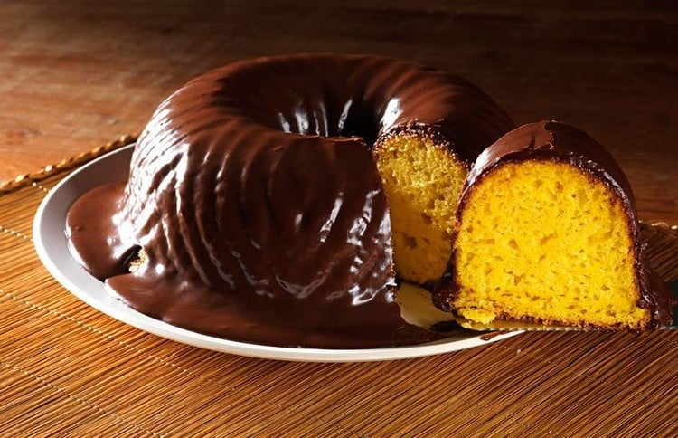
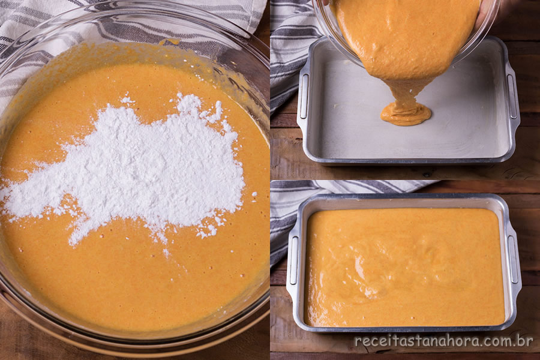
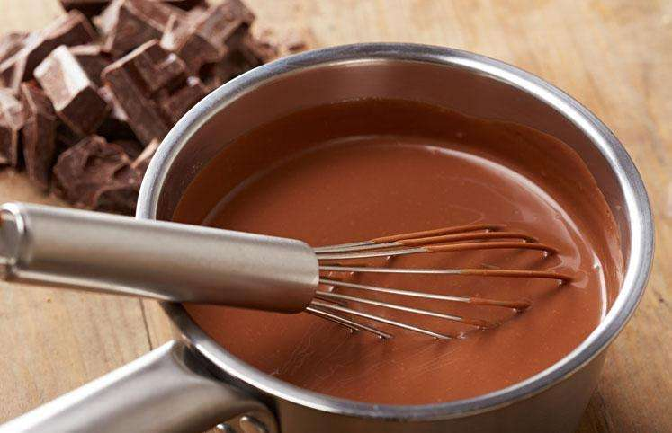

Receita do bolo de cenoura com cobertura de chocolate

Aprenda a fazer um bolo de cenoura com cobertura delicioso, feito com auxílio do liquidificador e perfeito para o café da manhã e para a hora do lanche!
(Caso queira acompanhar a receita em video, só clicar na foto a cima!)
Tempo de preparo: 40 min| Dificuldade: Médio| Médio Custo: Médio
Ingredientes (8 porções)
Massa
- 1/2 xícara (chá) de óleo
- 4 ovos
- 2 e 1/2 xícaras (chá) de farinha de trigo
- 3 cenouras médias raladas
- 2 xícaras (chá) de açúcar
- 1 colher (sopa) de fermento em pó
Cobertura
- 1 colher (sopa) de manteiga
- 1 xícara (chá) de açúcar
- 3 colheres (sopa) de chocolate em pó
- 1 xícara (chá) de leite
Modo de preparo
Massa

- Em um liquidificador, adicione a cenoura, os ovos e o óleo, depois misture.
- Acrescente o açúcar e bata novamente por 5 minutos.
- Em uma tigela ou na batedeira, adicione a farinha de trigo e depois misture novamente.
- Acrescente o fermento e misture lentamente com uma colher.
- Asse em um forno preaquecido a 180° C por aproximadamente 40 minutos.
Cobertura

- Despeje em uma tigela a manteiga, o chocolate em pó, o açúcar e o leite, depois misture.
- Leve a mistura ao fogo e continue misturando até obter uma consistência cremosa, depois despeje a calda por cima do bolo.
REFERENCIAS
Tudo gostoso